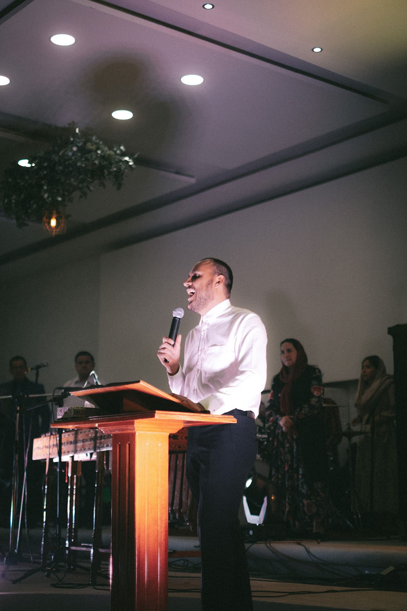
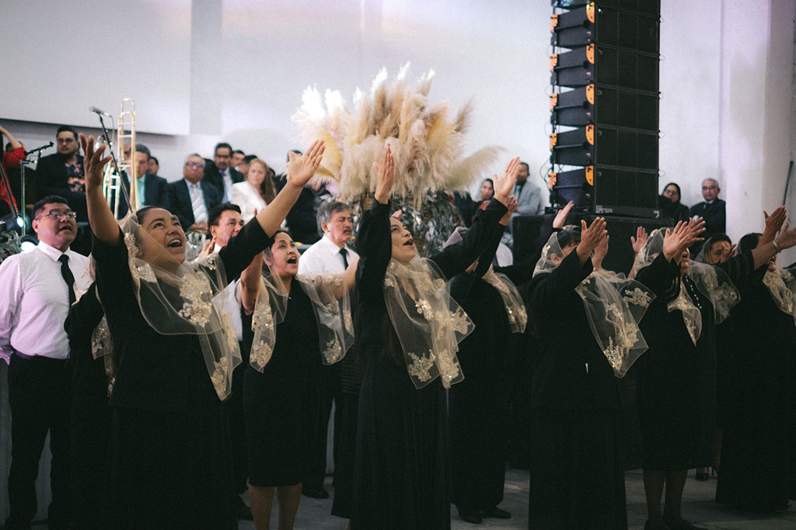
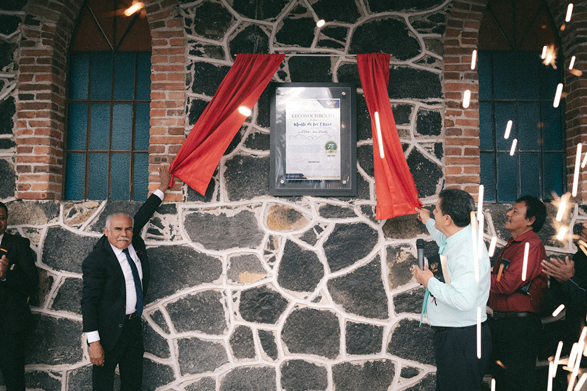
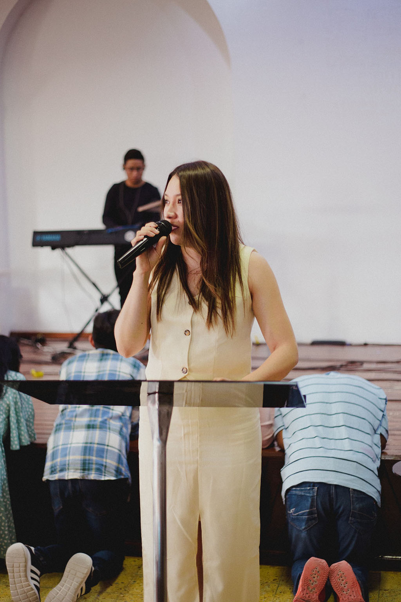
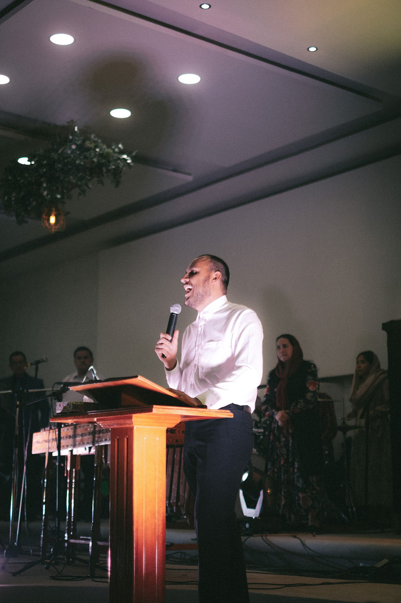
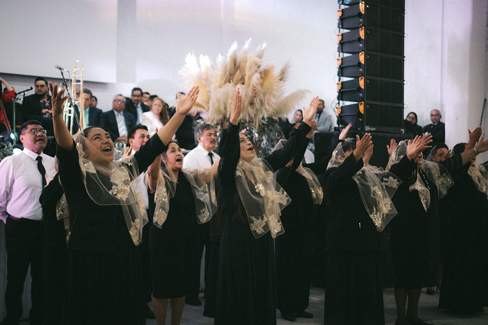
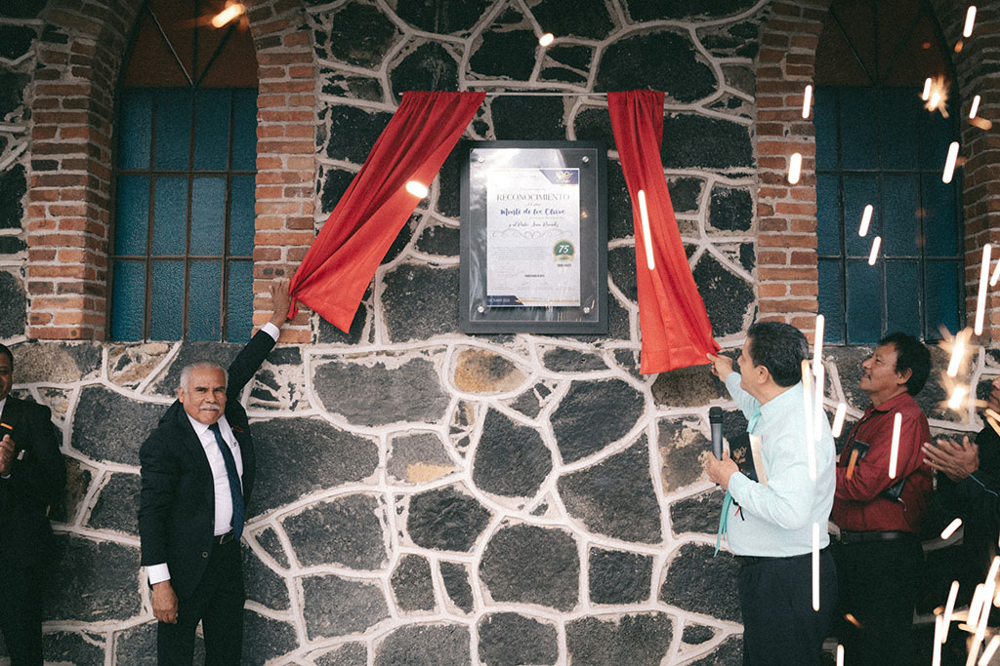
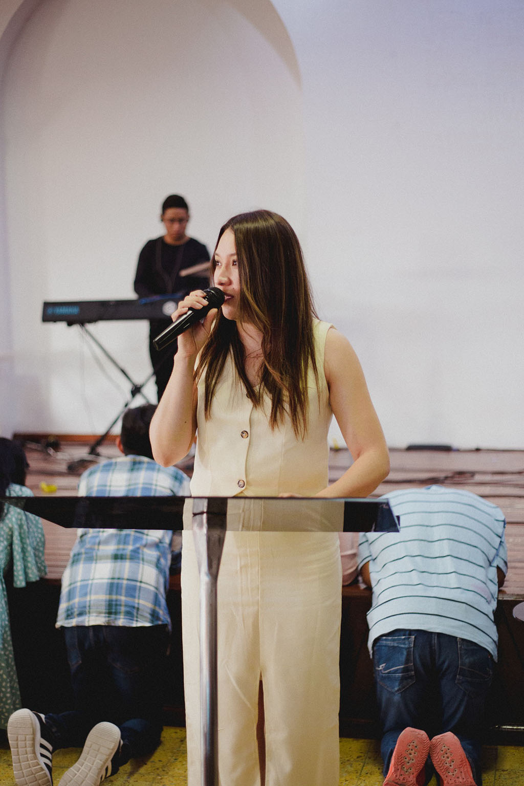

¿QUIÉNES SOMOS?
Monte de los Olivos es una comunidad cristiana con una rica historia de fe, ubicada en Huichapan, Hidalgo. Desde 1948, ha sido un faro de esperanza y transformación, ofreciendo un lugar donde personas de todas las edades y trasfondos puedan experimentar el amor de Dios y construir relaciones profundas.
En 2025, Monte de los Olivos celebrará con gozo su 77.º aniversario, honrando décadas de servicio y compromiso con su comunidad. A lo largo de los años, hemos impactado vidas a través de programas de apoyo social, eventos comunitarios y una vida de fe activa que busca glorificar a Jesús en todo lo que hacemos.
Hoy en día, continuamos creciendo como un hogar espiritual donde las vidas se conectan con Dios y entre sí, abrazando un mensaje renovador de esperanza, amor y propósito.
 






